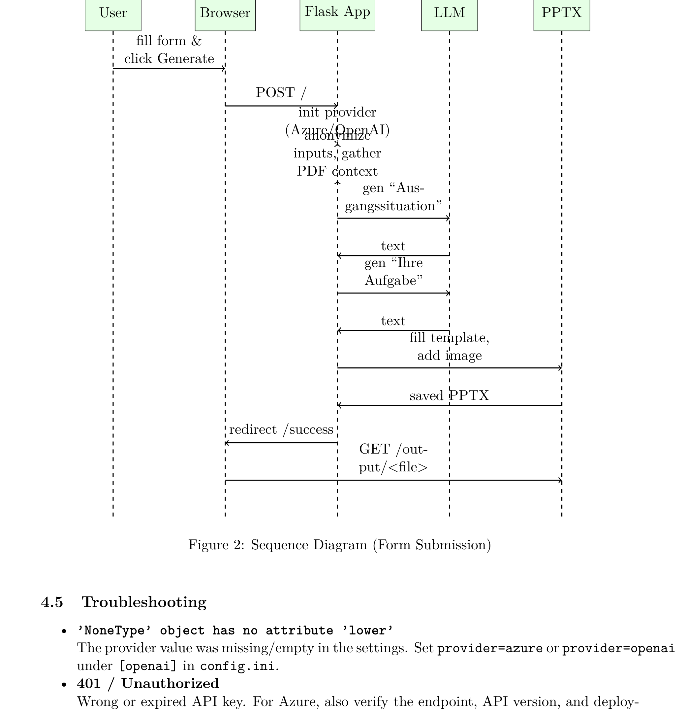
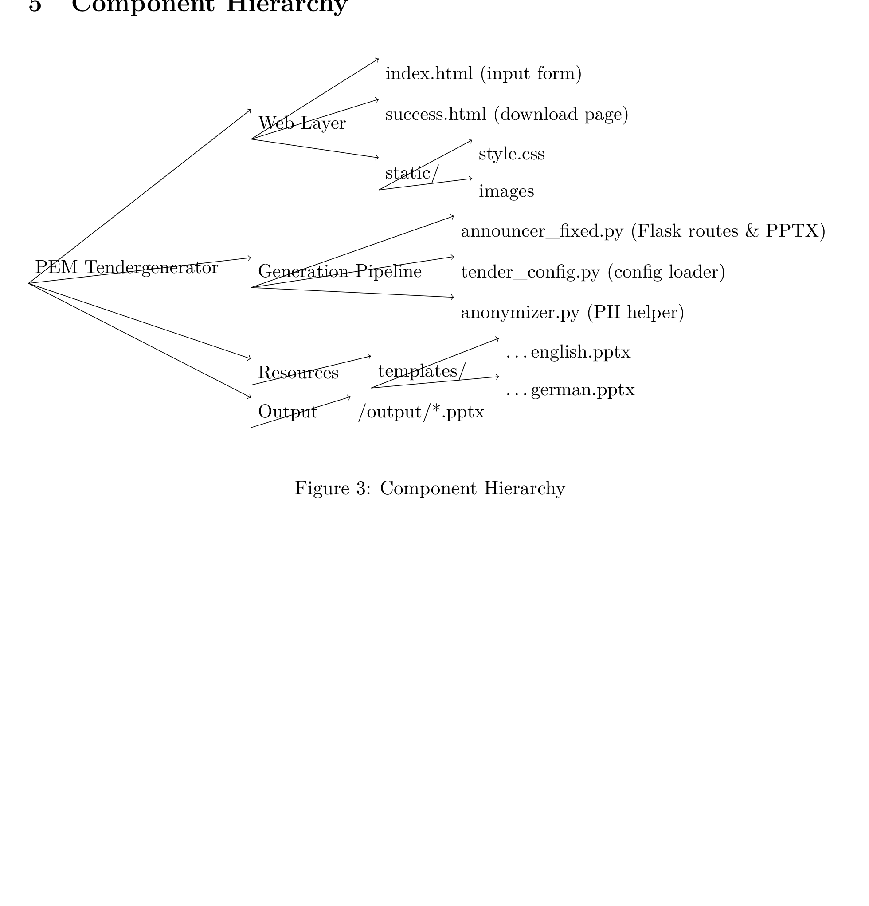

What this project solves
The software reduces manual work in creating thesis tender PowerPoints. Instead of manually rewriting rough text and editing slides, users enter short structured information and receive a finished branded presentation.
Architecture snapshots


Key engineering signals
- Browser-based UX for non-technical users
- LLM-backed text generation with deterministic document rendering
- Privacy-aware pseudonymization of personal names
- Configuration-driven deployment and operations
- Clear repository documentation for recruiters and evaluators